Electricity demand + temperature (EIA-930)
Baseline mstl, horizon 7 steps. Relative MASE: Timestral 0.772, best known-covariate variant timestral_temp_known 0.407.
Backtest report: electricity
Findings: EIA-930 daily electricity demand, 7 balancing authorities, 7-day one-shot, 78 weekly origins 2025-04-16..2026-10-07 (+ live)
Relative MASE vs MSTL (weekly + annual seasonality, AutoETS trend; <1 = better; geometric mean over 7 BAs):
| Model | day 1 | day 3 | day 7 | Overall | 80% coverage |
|---|
| Timestral + known temperature (mean, CDD, HDD) | 0.54 | 0.39 | 0.36 | 0.41 | 0.75 |
| Timestral + past temperature | 0.74 | 0.78 | 0.73 | 0.77 | 0.78 |
| Timestral (no covariates) | 0.75 | 0.79 | 0.74 | 0.77 | 0.79 |
| MSTL | 1.00 | 1.00 | 1.00 | 1.00 | 0.67 |
| Seasonal naive (last week) | 1.86 | 1.17 | 0.98 | 1.16 | 0.80 |
- Plain Timestral beats MSTL by 23% with no weather information, in every BA (0.73-0.81) and significantly (Diebold-Mariano at 5%) on all 7 BAs at day 1 and 4 of 7 at day 7.
- Knowing the temperature cuts error a further ~45% vs plain Timestral (PJM 0.43, ERCOT 0.47, MISO 0.51, ISO-NE 0.64)
- 0.41 vs MSTL overall, significantly better in all 7 BAs at every horizon. Unlike the macro panels, the gain grows with horizon (0.54 at day 1 to 0.36 at day 7), because weather is what the model cannot extrapolate from the load history.
- Past-only temperature adds nothing (0.77 vs 0.77): the value is entirely in the future path.
- Heat waves and cold snaps: in summer 2025 origins MASE goes 1.24 (MSTL) -> 0.95 (Timestral) -> 0.49 (with temperature); in winter 2025-26 0.96 -> 0.76 -> 0.37.
- Intervals are somewhat narrow for Timestral (75-79% for nominal 80%); MSTL's are much too narrow (67%).
Caveats: "known" temperature is the realised daily mean at 3-4 load centres per BA (a perfect weather forecast), so real 7-day weather-forecast error would erode part of the gain, especially at days 5-7. Daily totals, not hourly; no holiday calendar; AutoARIMA(7) was dropped as too slow on the shared CPU box. EIA's own day-ahead demand forecast in the bulk files is a natural next benchmark.
---
Full tables
- Series: 7 ids x 1 targets = 7
- Data: 2022-01-01 to 2026-10-14 (1748 periods)
- Rolling origins: 78 (2025-04-16 .. 2026-10-07), one-shot direct horizon h=1..7
- Challenger
timestral_temp_known vs baseline mstl. MASE scale = in-sample naive (lag 7).
Overall
| model | MAE | RMSE | MAPE | sMAPE | MASE | coverage80 | dir_acc | n |
|---|
| timestral_temp_known | 26.657 | 43.794 | 2.029 | 2.888 | 0.397 | 0.752 | 0.866 | 3821 |
| timestral_temp_past | 53.646 | 93.390 | 3.839 | 5.297 | 0.735 | 0.775 | 0.721 | 3821 |
| timestral | 53.867 | 91.979 | 3.819 | 5.346 | 0.742 | 0.793 | 0.719 | 3821 |
| mstl | 70.298 | 119.120 | 5.086 | 6.981 | 0.963 | 0.666 | 0.622 | 3821 |
| seasonal_naive | 81.496 | 132.485 | 6.107 | 7.949 | 1.110 | 0.803 | 0.603 | 3821 |
MASE by horizon (all series)
| h | seasonal_naive | mstl | timestral | timestral_temp_past | timestral_temp_known |
|---|
| 1 | 1.109 | 0.604 | 0.469 | 0.458 | 0.333 |
| 2 | 1.130 | 0.837 | 0.684 | 0.674 | 0.388 |
| 3 | 1.060 | 0.910 | 0.711 | 0.705 | 0.362 |
| 4 | 1.053 | 0.988 | 0.757 | 0.762 | 0.422 |
| 5 | 1.109 | 1.073 | 0.835 | 0.832 | 0.451 |
| 6 | 1.162 | 1.161 | 0.875 | 0.864 | 0.396 |
| 7 | 1.145 | 1.169 | 0.861 | 0.846 | 0.427 |
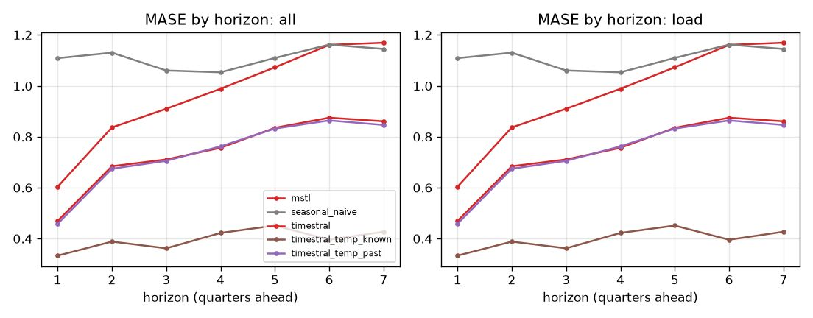
Skill vs horizon
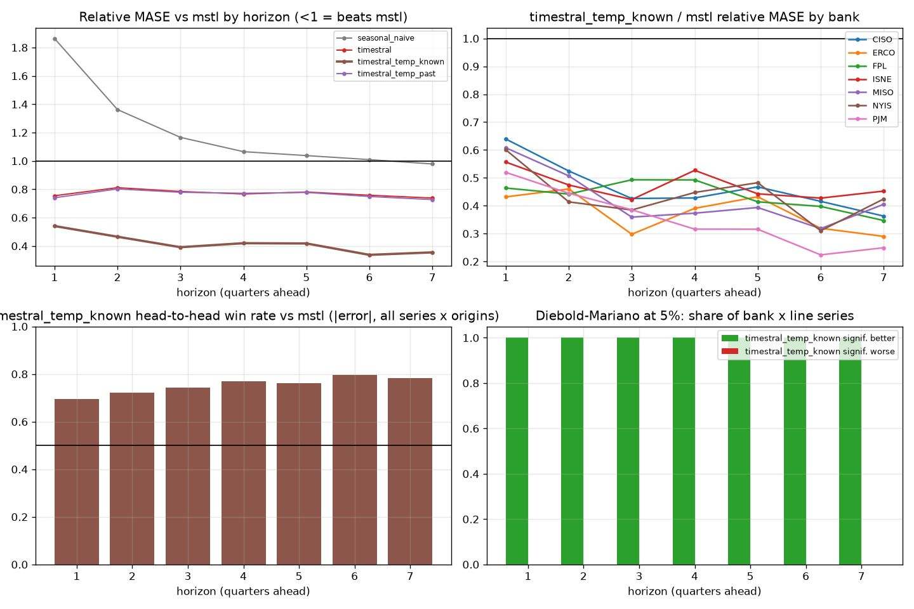
| h | mstl | seasonal_naive | timestral | timestral_temp_known | timestral_temp_past |
|---|
| 1 | 1.000 | 1.864 | 0.754 | 0.541 | 0.740 |
| 2 | 1.000 | 1.363 | 0.812 | 0.465 | 0.802 |
| 3 | 1.000 | 1.166 | 0.785 | 0.391 | 0.779 |
| 4 | 1.000 | 1.066 | 0.767 | 0.420 | 0.772 |
| 5 | 1.000 | 1.038 | 0.781 | 0.418 | 0.778 |
| 6 | 1.000 | 1.009 | 0.758 | 0.337 | 0.749 |
| 7 | 1.000 | 0.979 | 0.739 | 0.355 | 0.727 |
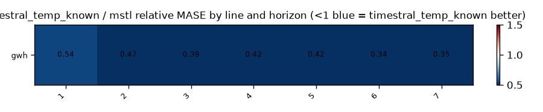
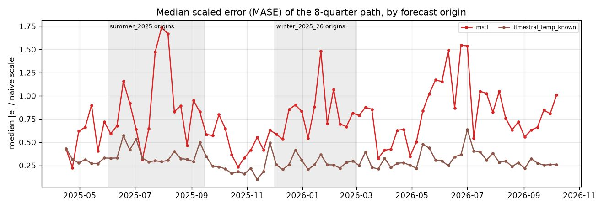
Relative MASE vs baseline (geometric mean; <1 = better than baseline)
| model | rel_mase |
|---|
| timestral_temp_known | 0.407 |
| timestral_temp_past | 0.765 |
| timestral | 0.772 |
| mstl | 1.000 |
| seasonal_naive | 1.157 |
By bank
| id | mstl | seasonal_naive | timestral | timestral_temp_known | timestral_temp_past |
|---|
| CISO | 1.000 | 1.316 | 0.812 | 0.450 | 0.784 |
| ERCO | 1.000 | 1.133 | 0.770 | 0.365 | 0.751 |
| FPL | 1.000 | 1.215 | 0.803 | 0.433 | 0.807 |
| ISNE | 1.000 | 1.033 | 0.733 | 0.467 | 0.729 |
| MISO | 1.000 | 1.242 | 0.788 | 0.404 | 0.803 |
| NYIS | 1.000 | 1.058 | 0.754 | 0.426 | 0.738 |
| PJM | 1.000 | 1.127 | 0.748 | 0.323 | 0.748 |
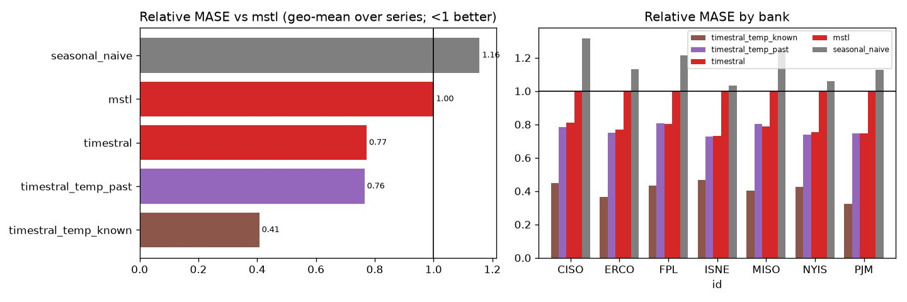
Win rates (share of series where challenger beats baseline)
| id | MAE | MASE | RMSE | dir_acc | sMAPE |
|---|
| CISO | 100% | 100% | 100% | 100% | 100% |
| ERCO | 100% | 100% | 100% | 100% | 100% |
| FPL | 100% | 100% | 100% | 100% | 100% |
| ISNE | 100% | 100% | 100% | 100% | 100% |
| MISO | 100% | 100% | 100% | 100% | 100% |
| NYIS | 100% | 100% | 100% | 100% | 100% |
| PJM | 100% | 100% | 100% | 100% | 100% |
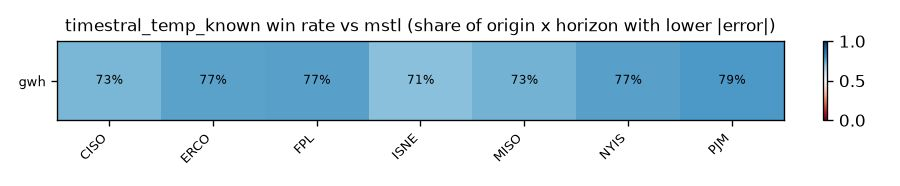
Diebold-Mariano (squared error, HLN-corrected, per series and horizon)
Share of bank x target series where the challenger is significantly better / worse at 5%:
| h | better | worse |
|---|
| 1 | 100% | 0% |
| 2 | 100% | 0% |
| 3 | 100% | 0% |
| 4 | 100% | 0% |
| 5 | 100% | 0% |
| 6 | 100% | 0% |
| 7 | 100% | 0% |
Stress slices (MASE)
| model | normal | summer_2025 | winter_2025_26 |
|---|
| mstl | 0.881 | 1.243 | 0.955 |
| seasonal_naive | 1.032 | 1.432 | 1.037 |
| timestral | 0.674 | 0.949 | 0.762 |
| timestral_temp_known | 0.376 | 0.492 | 0.369 |
| timestral_temp_past | 0.650 | 0.954 | 0.806 |
Interval coverage (80%)
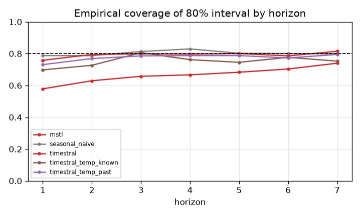
Balance-sheet identity consistency
(none configured)
Forecast fans
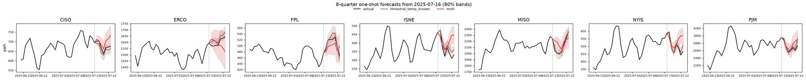
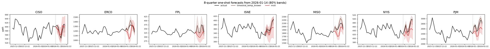
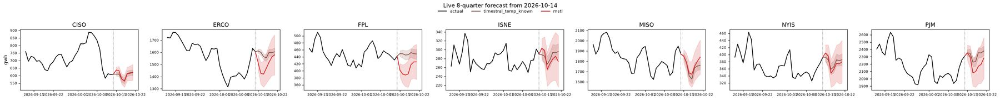
Diebold-Mariano vs baseline, all models
Share of series significantly better than mstl at 5% (squared error):
| h | seasonal_naive | timestral | timestral_temp_known | timestral_temp_past |
|---|
| 1 | 0% | 100% | 100% | 100% |
| 2 | 0% | 86% | 100% | 71% |
| 3 | 0% | 71% | 100% | 57% |
| 4 | 0% | 71% | 100% | 43% |
| 5 | 0% | 57% | 100% | 43% |
| 6 | 0% | 43% | 100% | 43% |
| 7 | 0% | 57% | 100% | 57% |
Share significantly worse:
| h | seasonal_naive | timestral | timestral_temp_known | timestral_temp_past |
|---|
| 1 | 100% | 0% | 0% | 0% |
| 2 | 71% | 0% | 0% | 0% |
| 3 | 14% | 0% | 0% | 0% |
| 4 | 0% | 0% | 0% | 0% |
| 5 | 0% | 0% | 0% | 0% |
| 6 | 0% | 0% | 0% | 0% |
| 7 | 0% | 0% | 0% | 0% |
80% interval coverage by line
| model | gwh |
|---|
| mstl | 0.666 |
| seasonal_naive | 0.803 |
| timestral | 0.793 |
| timestral_temp_known | 0.752 |
| timestral_temp_past | 0.775 |
Relative MASE vs mstl by line
| target | mstl | seasonal_naive | timestral | timestral_temp_known | timestral_temp_past |
|---|
| gwh | 1.000 | 1.157 | 0.772 | 0.407 | 0.765 |
gwh: relative MASE by horizon
| h | mstl | seasonal_naive | timestral | timestral_temp_known | timestral_temp_past |
|---|
| 1 | 1.000 | 1.864 | 0.754 | 0.541 | 0.740 |
| 2 | 1.000 | 1.363 | 0.812 | 0.465 | 0.802 |
| 3 | 1.000 | 1.166 | 0.785 | 0.391 | 0.779 |
| 4 | 1.000 | 1.066 | 0.767 | 0.420 | 0.772 |
| 5 | 1.000 | 1.038 | 0.781 | 0.418 | 0.778 |
| 6 | 1.000 | 1.009 | 0.758 | 0.337 | 0.749 |
| 7 | 1.000 | 0.979 | 0.739 | 0.355 | 0.727 |
How much does timestral_temp_known help vs timestral? (relative MASE, <1 = helps)
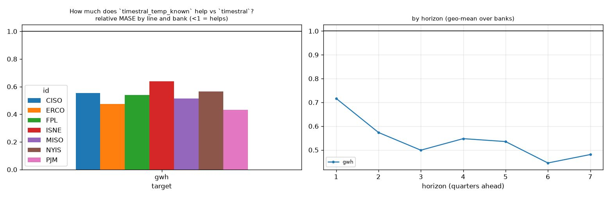
How much does timestral_temp_past help vs timestral? (relative MASE, <1 = helps)
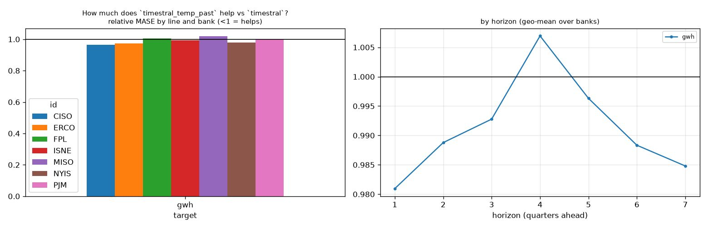
How much does timestral help vs mstl? (relative MASE, <1 = helps)
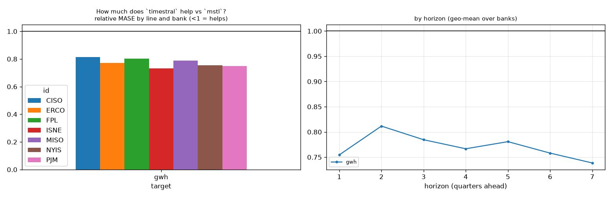
Line x variant: relative MASE vs baseline
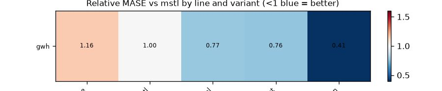
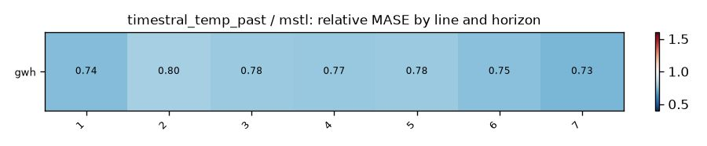
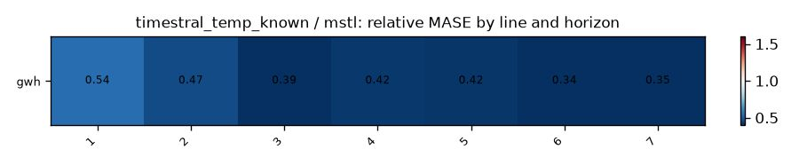
Does macro help? (relative MASE of covariate variant vs its no-covariate twin; <1 = helps)
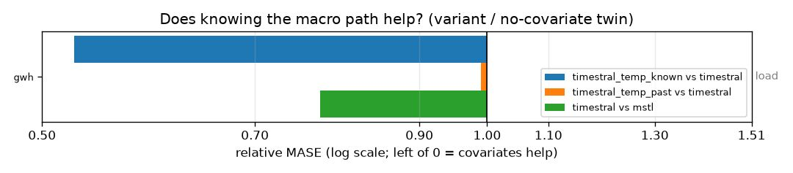
| target | timestral_temp_known vs timestral | timestral_temp_past vs timestral | timestral vs mstl |
|---|
| gwh | 0.527 | 0.991 | 0.772 |
Spaghetti pages by group
Relative MASE vs mstl by series
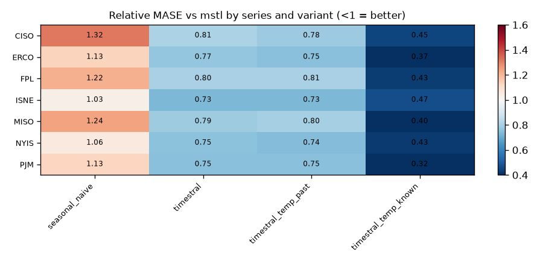
| id | seasonal_naive | timestral | timestral_temp_past | timestral_temp_known |
|---|
| CISO | 1.316 | 0.812 | 0.784 | 0.450 |
| ERCO | 1.133 | 0.770 | 0.751 | 0.365 |
| FPL | 1.215 | 0.803 | 0.807 | 0.433 |
| ISNE | 1.033 | 0.733 | 0.729 | 0.467 |
| MISO | 1.242 | 0.788 | 0.803 | 0.404 |
| NYIS | 1.058 | 0.754 | 0.738 | 0.426 |
| PJM | 1.127 | 0.748 | 0.748 | 0.323 |
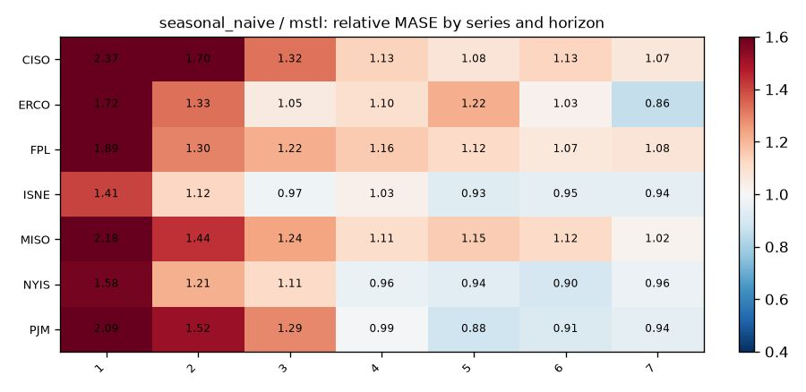
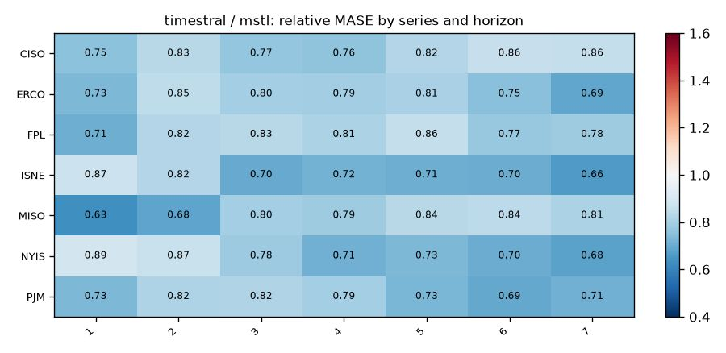
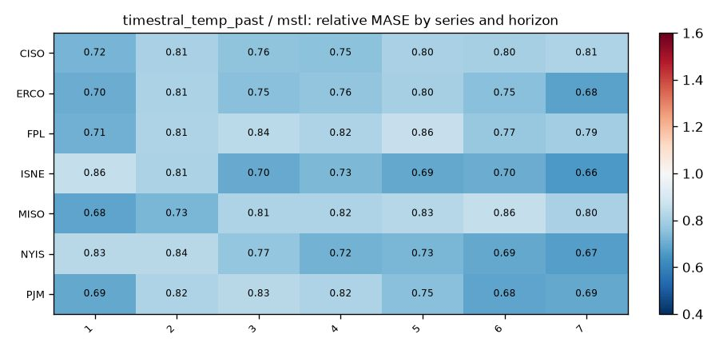
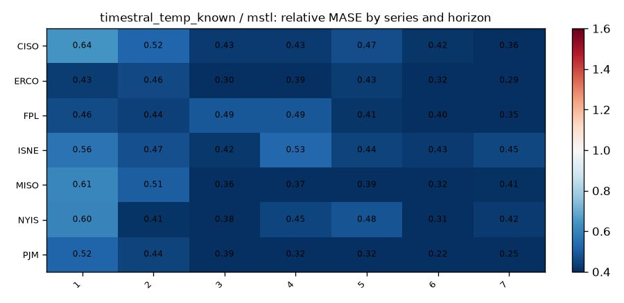
Spaghetti grids: load
Columns: mstl | timestral | timestral_temp_known. Rows: banks. Colour = origin date; black = actual.
| target | seasonal_naive | mstl | timestral | timestral_temp_past | timestral_temp_known |
|---|
| gwh | 1.157 | 1.000 | 0.772 | 0.765 | 0.407 |
gwh
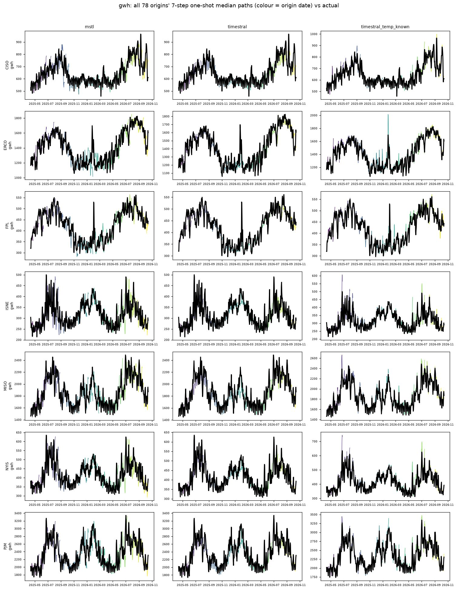
Other plots
error_by_horizon_smape
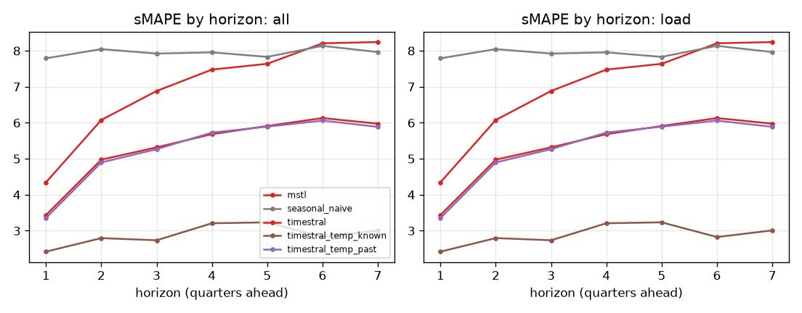
winrate_heatmap_bank_horizon
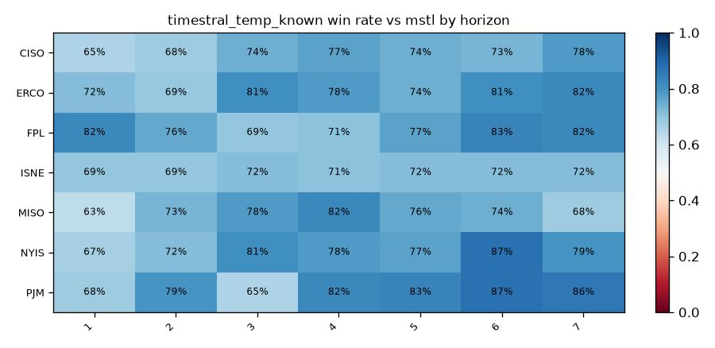
winrate_heatmap_bank_metric
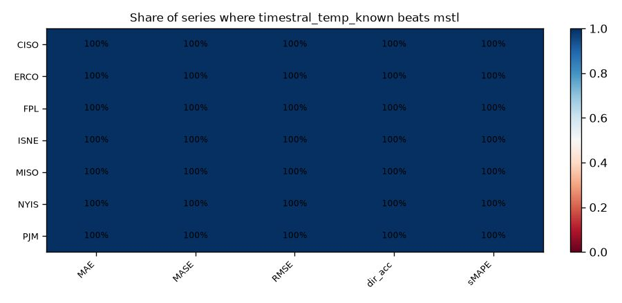